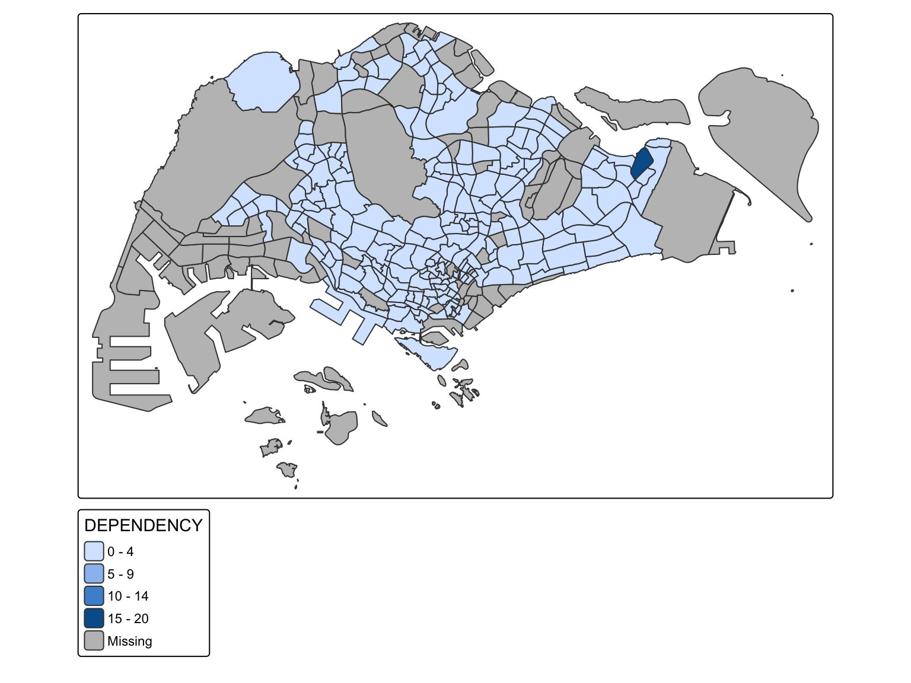
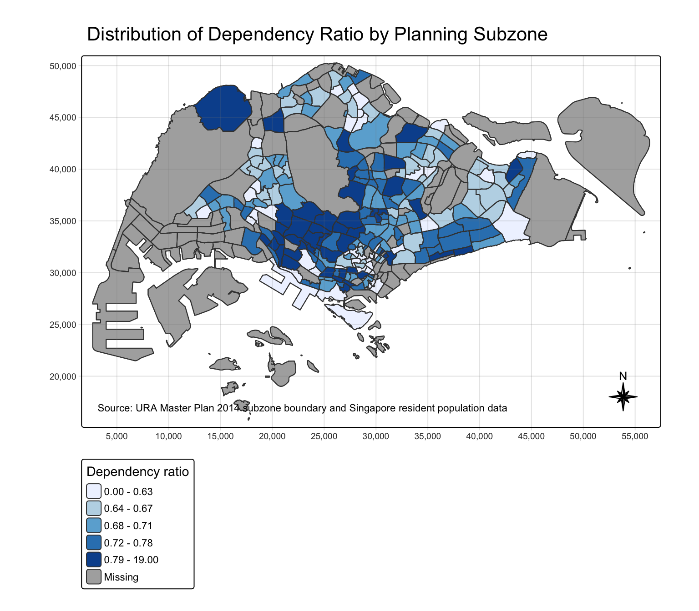
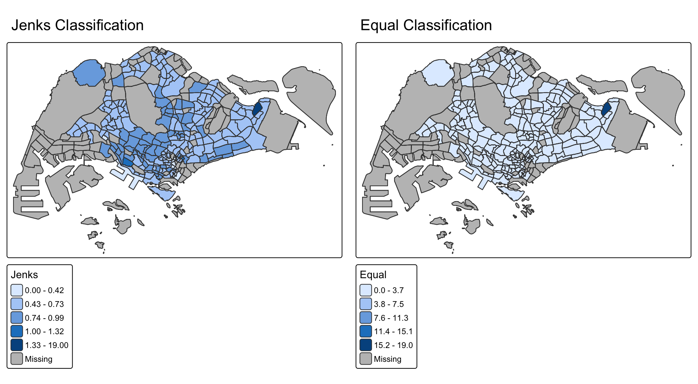
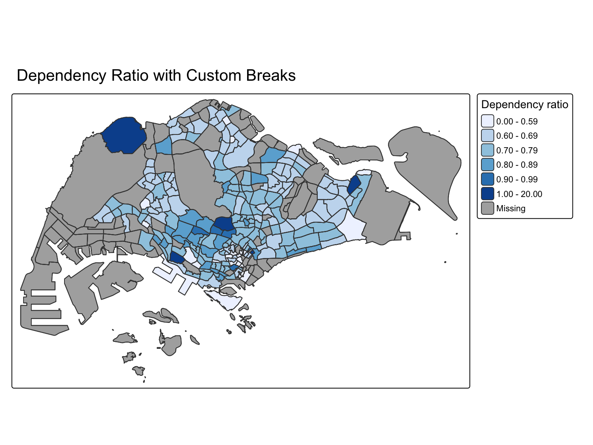
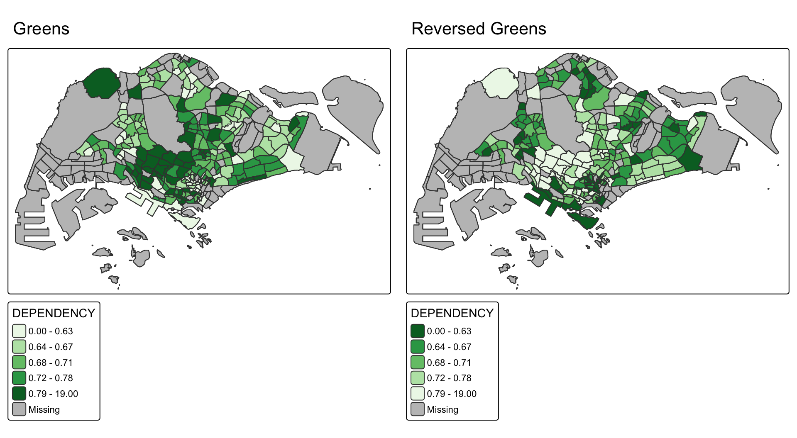
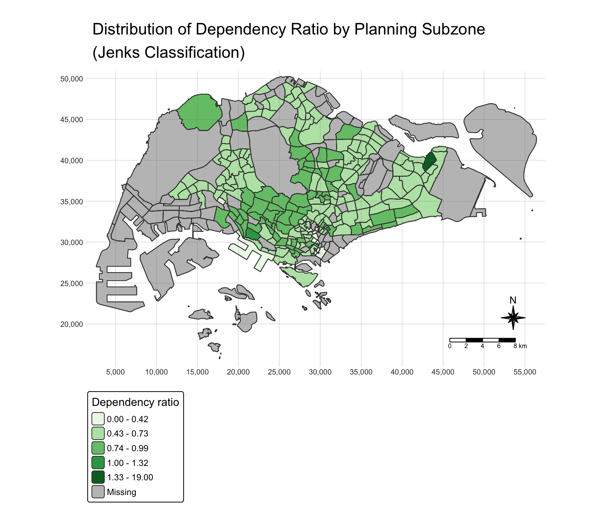
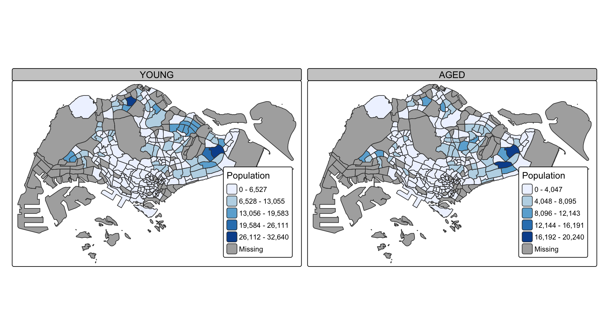
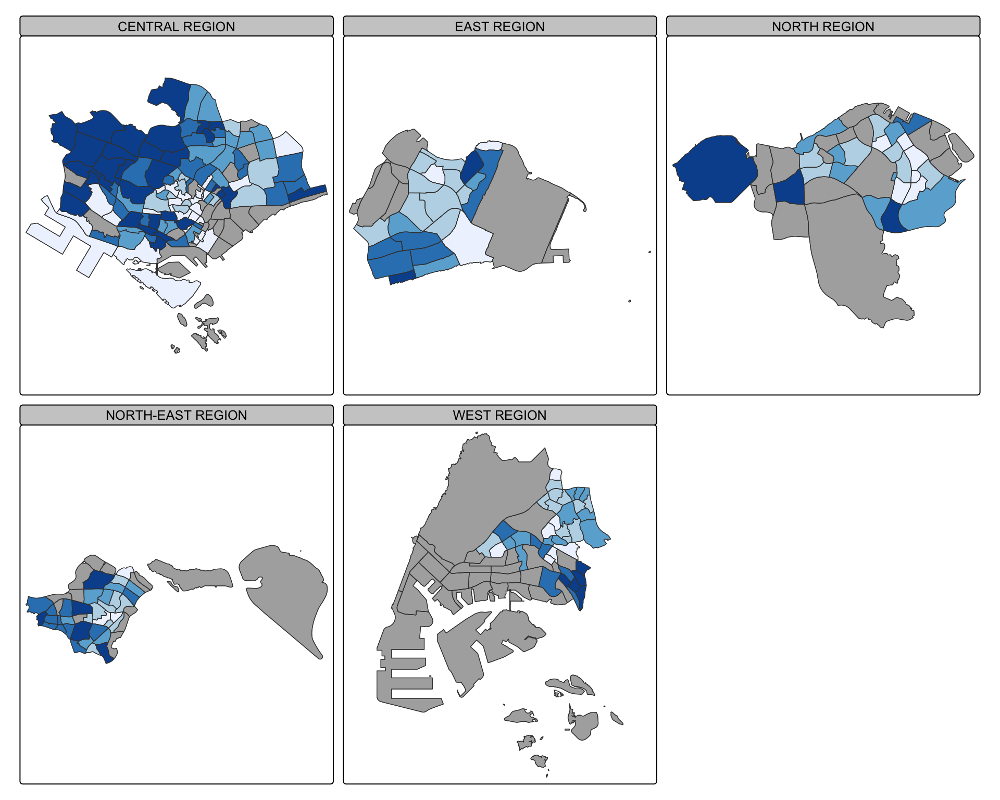
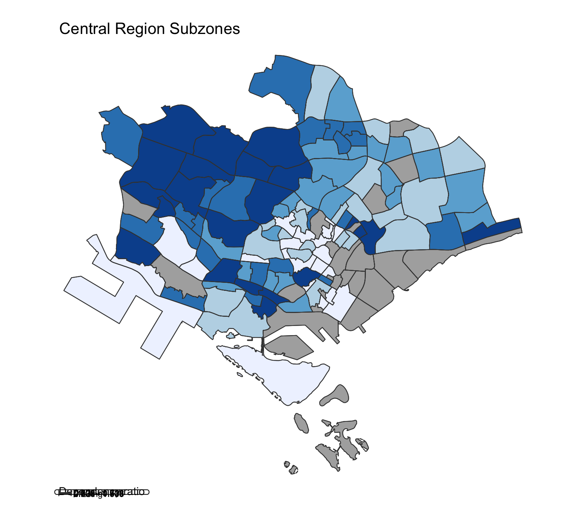

tribble(
~Package, ~Purpose,
"sf", "Importing and handling simple feature geospatial data.",
"tmap", "Creating static and interactive thematic maps.",
"tidyverse", "Reading, tidying, transforming, and plotting data.",
"DT", "Interactive tables.",
"knitr", "Clean tables in the rendered report.",
"scales", "Formatted numbers and percentages."
) |>
datatable(
rownames = FALSE,
options = list(pageLength = 10, dom = "tip")
)Hands-on Exercise 9a - Choropleth Mapping in R
21.1 Overview
This hands-on exercise follows Chapter 21 of R4VA, Choropleth Mapping with R. The chapter introduces choropleth mapping by using Singapore Master Plan 2014 subzone boundaries and 2020 resident population attributes.
The main tasks are:
- import geospatial data with
sf; - import aspatial population data with
readr; - prepare young, economy-active, aged, total, and dependency-ratio variables;
- join the spatial and attribute data;
- create choropleth maps with
tmap; - compare data classification methods and colour schemes; and
- create small multiple maps and selection maps.
21.2 Getting Started
The key package in this exercise is tmap. The sf package handles geospatial data, and tidyverse provides readr, tidyr, and dplyr for data import and wrangling.
The package installation and loading code is included in the setup chunk:
if (!requireNamespace("pacman", quietly = TRUE)) {
install.packages("pacman", repos = "https://cloud.r-project.org")
}
pacman::p_load(sf, tmap, tidyverse, DT, knitr, scales)21.3 Importing Data into R
21.3.1 The Data
Two datasets are used:
MP14_SUBZONE_WEB_PL, an ESRI shapefile of Singapore Master Plan 2014 planning subzones;respopagesextod2011to2020.csv, a CSV file of Singapore residents by planning area, subzone, age group, sex, type of dwelling, and year.
21.3.2 Importing Geospatial Data into R
mpsz <- st_read(
dsn = find_data_dir("geospatial"),
layer = "MP14_SUBZONE_WEB_PL",
quiet = TRUE
)
mpszSimple feature collection with 323 features and 15 fields
Geometry type: MULTIPOLYGON
Dimension: XY
Bounding box: xmin: 2667.538 ymin: 15748.72 xmax: 56396.44 ymax: 50256.33
Projected CRS: SVY21
First 10 features:
OBJECTID SUBZONE_NO SUBZONE_N SUBZONE_C CA_IND PLN_AREA_N
1 1 1 MARINA SOUTH MSSZ01 Y MARINA SOUTH
2 2 1 PEARL'S HILL OTSZ01 Y OUTRAM
3 3 3 BOAT QUAY SRSZ03 Y SINGAPORE RIVER
4 4 8 HENDERSON HILL BMSZ08 N BUKIT MERAH
5 5 3 REDHILL BMSZ03 N BUKIT MERAH
6 6 7 ALEXANDRA HILL BMSZ07 N BUKIT MERAH
7 7 9 BUKIT HO SWEE BMSZ09 N BUKIT MERAH
8 8 2 CLARKE QUAY SRSZ02 Y SINGAPORE RIVER
9 9 13 PASIR PANJANG 1 QTSZ13 N QUEENSTOWN
10 10 7 QUEENSWAY QTSZ07 N QUEENSTOWN
PLN_AREA_C REGION_N REGION_C INC_CRC FMEL_UPD_D X_ADDR
1 MS CENTRAL REGION CR 5ED7EB253F99252E 2014-12-05 31595.84
2 OT CENTRAL REGION CR 8C7149B9EB32EEFC 2014-12-05 28679.06
3 SR CENTRAL REGION CR C35FEFF02B13E0E5 2014-12-05 29654.96
4 BM CENTRAL REGION CR 3775D82C5DDBEFBD 2014-12-05 26782.83
5 BM CENTRAL REGION CR 85D9ABEF0A40678F 2014-12-05 26201.96
6 BM CENTRAL REGION CR 9D286521EF5E3B59 2014-12-05 25358.82
7 BM CENTRAL REGION CR 7839A8577144EFE2 2014-12-05 27680.06
8 SR CENTRAL REGION CR 48661DC0FBA09F7A 2014-12-05 29253.21
9 QT CENTRAL REGION CR 1F721290C421BFAB 2014-12-05 22077.34
10 QT CENTRAL REGION CR 3580D2AFFBEE914C 2014-12-05 24168.31
Y_ADDR SHAPE_Leng SHAPE_Area geometry
1 29220.19 5267.381 1630379.3 MULTIPOLYGON (((31495.56 30...
2 29782.05 3506.107 559816.2 MULTIPOLYGON (((29092.28 30...
3 29974.66 1740.926 160807.5 MULTIPOLYGON (((29932.33 29...
4 29933.77 3313.625 595428.9 MULTIPOLYGON (((27131.28 30...
5 30005.70 2825.594 387429.4 MULTIPOLYGON (((26451.03 30...
6 29991.38 4428.913 1030378.8 MULTIPOLYGON (((25899.7 297...
7 30230.86 3275.312 551732.0 MULTIPOLYGON (((27746.95 30...
8 30222.86 2208.619 290184.7 MULTIPOLYGON (((29351.26 29...
9 29893.78 6571.323 1084792.3 MULTIPOLYGON (((20996.49 30...
10 30104.18 3454.239 631644.3 MULTIPOLYGON (((24472.11 29...tibble(
measure = c(
"Number of subzone polygons",
"Number of attribute fields",
"Geometry type",
"Coordinate reference system"
),
value = c(
nrow(mpsz),
ncol(st_drop_geometry(mpsz)),
paste(unique(st_geometry_type(mpsz)), collapse = ", "),
st_crs(mpsz)$input
)
) |>
kable()| measure | value |
|---|---|
| Number of subzone polygons | 323 |
| Number of attribute fields | 15 |
| Geometry type | MULTIPOLYGON |
| Coordinate reference system | SVY21 |
21.3.3 Importing Attribute Data into R
popdata <- read_csv(
find_data_file("respopagesextod2011to2020.csv", "aspatial"),
show_col_types = FALSE
)
popdata |>
slice_head(n = 10) |>
datatable(
rownames = FALSE,
options = list(pageLength = 10, scrollX = TRUE, dom = "tip")
)21.3.4 Data Preparation
The chapter prepares a 2020 table with these variables:
YOUNG: residents aged 0 to 24;ECONOMY ACTIVE: residents aged 25 to 64;AGED: residents aged 65 and above;TOTAL: all residents in the selected age groups; andDEPENDENCY:(YOUNG + AGED) / ECONOMY ACTIVE.
The code below uses explicit age-group names from the CSV so the calculation does not depend on the column order produced by pivot_wider().
young_ags <- c(
"0_to_4", "5_to_9", "10_to_14", "15_to_19", "20_to_24"
)
active_ags <- c(
"25_to_29", "30_to_34", "35_to_39", "40_to_44",
"45_to_49", "50_to_54", "55_to_59", "60_to_64"
)
aged_ags <- c(
"65_to_69", "70_to_74", "75_to_79",
"80_to_84", "85_to_89", "90_and_over"
)
popdata2020 <- popdata |>
filter(Time == 2020) |>
mutate(
AGE_GROUP = case_when(
AG %in% young_ags ~ "YOUNG",
AG %in% active_ags ~ "ECONOMY ACTIVE",
AG %in% aged_ags ~ "AGED",
TRUE ~ NA_character_
)
) |>
filter(!is.na(AGE_GROUP)) |>
group_by(PA, SZ, AGE_GROUP) |>
summarise(POP = sum(Pop), .groups = "drop") |>
pivot_wider(
names_from = AGE_GROUP,
values_from = POP,
values_fill = 0
) |>
mutate(
TOTAL = YOUNG + `ECONOMY ACTIVE` + AGED,
DEPENDENCY = (YOUNG + AGED) / `ECONOMY ACTIVE`
) |>
select(
PA, SZ, YOUNG, `ECONOMY ACTIVE`,
AGED, TOTAL, DEPENDENCY
) |>
mutate(across(c(PA, SZ), toupper)) |>
filter(`ECONOMY ACTIVE` > 0)
popdata2020 |>
slice_head(n = 10) |>
datatable(
rownames = FALSE,
options = list(pageLength = 10, scrollX = TRUE, dom = "tip")
) |>
formatRound(columns = "DEPENDENCY", digits = 3)21.3.5 Joining Attribute and Geospatial Data
The georelational join is performed with the spatial object on the left side of left_join(). This preserves the output as a simple feature data frame.
mpsz_pop2020 <- left_join(
mpsz,
popdata2020,
by = c("SUBZONE_N" = "SZ")
)
dir.create(file.path("data", "rds"), recursive = TRUE, showWarnings = FALSE)
write_rds(mpsz_pop2020, file.path("data", "rds", "mpszpop2020.rds"))
tibble(
measure = c(
"Subzone polygons after join",
"Polygons with dependency values",
"Polygons with missing dependency values"
),
value = c(
nrow(mpsz_pop2020),
sum(!is.na(mpsz_pop2020$DEPENDENCY)),
sum(is.na(mpsz_pop2020$DEPENDENCY))
)
) |>
kable()| measure | value |
|---|---|
| Subzone polygons after join | 323 |
| Polygons with dependency values | 231 |
| Polygons with missing dependency values | 92 |
summary(mpsz_pop2020$DEPENDENCY) Min. 1st Qu. Median Mean 3rd Qu. Max. NA's
0.0000 0.6519 0.7025 0.7742 0.7645 19.0000 92 21.4 Choropleth Mapping Geospatial Data Using tmap
21.4.1 Plotting a Choropleth Map Quickly with qtm()

tmap_mode("plot")
qtm(mpsz_pop2020, fill = "DEPENDENCY")21.4.2 Creating a Choropleth Map by Using tmap Elements
The map below uses tm_shape(), tm_polygons(), tm_borders(), and map layout elements. The syntax follows tmap version 4.

tm_shape(mpsz_pop2020) +
tm_polygons(
fill = "DEPENDENCY",
fill.scale = tm_scale_intervals(
style = "quantile",
n = 5,
values = "brewer.blues"
),
fill.legend = tm_legend(title = "Dependency ratio")
) +
tm_title("Distribution of Dependency Ratio by Planning Subzone") +
tm_layout(frame = TRUE) +
tm_borders(fill_alpha = 0.5) +
tm_compass(type = "8star", size = 2) +
tm_grid(alpha = 0.2)21.4.3 Data Classification Methods of tmap
Choropleth maps can look very different depending on how values are classified into map classes. The maps below compare Jenks and equal-interval classification.

jenks_map <- tm_shape(mpsz_pop2020) +
tm_polygons(
fill = "DEPENDENCY",
fill.scale = tm_scale_intervals(style = "jenks", n = 5)
) +
tm_title("Jenks Classification") +
tm_borders(fill_alpha = 0.5)
equal_map <- tm_shape(mpsz_pop2020) +
tm_polygons(
fill = "DEPENDENCY",
fill.scale = tm_scale_intervals(style = "equal", n = 5)
) +
tm_title("Equal Classification") +
tm_borders(fill_alpha = 0.5)
tmap_arrange(jenks_map, equal_map, ncol = 2)
Warning
Maps can mislead. The same values may appear spatially different when a different classification method or number of classes is used.
21.4.4 Plotting Choropleth Map with Custom Breaks
Before setting custom breaks, it is useful to inspect the distribution of the target variable.
dependency_stats <- mpsz_pop2020 |>
st_drop_geometry() |>
summarise(
min = min(DEPENDENCY, na.rm = TRUE),
q1 = quantile(DEPENDENCY, 0.25, na.rm = TRUE),
median = median(DEPENDENCY, na.rm = TRUE),
mean = mean(DEPENDENCY, na.rm = TRUE),
q3 = quantile(DEPENDENCY, 0.75, na.rm = TRUE),
max = max(DEPENDENCY, na.rm = TRUE),
missing = sum(is.na(DEPENDENCY))
)
kable(dependency_stats, digits = 3)| min | q1 | median | mean | q3 | max | missing |
|---|---|---|---|---|---|---|
| 0 | 0.652 | 0.702 | 0.774 | 0.765 | 19 | 92 |

tm_shape(mpsz_pop2020) +
tm_polygons(
fill = "DEPENDENCY",
fill.scale = tm_scale_intervals(
breaks = c(0, 0.60, 0.70, 0.80, 0.90, 1.00, 20),
values = "brewer.blues"
)
) +
tm_borders(fill_alpha = 0.5)21.4.5 Colour Scheme
The colour scheme can be changed by passing a palette to values.

tm_shape(mpsz_pop2020) +
tm_polygons(
fill = "DEPENDENCY",
fill.scale = tm_scale_intervals(
style = "quantile",
n = 5,
values = "brewer.greens"
)
) +
tm_borders(fill_alpha = 0.5)21.4.6 Map Layouts and Cartographic Furniture

tm_shape(mpsz_pop2020) +
tm_polygons(
fill = "DEPENDENCY",
fill.scale = tm_scale_intervals(
style = "jenks",
n = 5,
values = "brewer.greens"
),
fill.legend = tm_legend(title = "Dependency ratio")
) +
tm_title("Distribution of Dependency Ratio by Planning Subzone") +
tm_layout(frame = FALSE) +
tm_borders(fill_alpha = 0.5) +
tm_compass(type = "8star", size = 2) +
tm_scalebar() +
tm_grid(alpha = 0.2)21.4.7 Drawing Small Multiple Choropleth Maps
Small multiple maps make it possible to compare more than one variable or category using the same spatial units.

tm_shape(mpsz_pop2020) +
tm_polygons(
fill = c("YOUNG", "AGED"),
fill.scale = tm_scale_intervals(
style = "equal",
values = "brewer.blues"
)
) +
tm_layout(legend.position = c("right", "bottom")) +
tm_borders(fill_alpha = 0.5)21.4.8 Facet Maps by Region
mpsz_pop2020 |>
st_drop_geometry() |>
count(REGION_N, sort = TRUE) |>
kable()| REGION_N | n |
|---|---|
| CENTRAL REGION | 134 |
| WEST REGION | 70 |
| NORTH-EAST REGION | 48 |
| NORTH REGION | 41 |
| EAST REGION | 30 |

tm_shape(mpsz_pop2020) +
tm_polygons(
fill = "DEPENDENCY",
fill.scale = tm_scale_intervals(
style = "quantile",
values = "brewer.blues"
)
) +
tm_facets(by = "REGION_N", free.coords = TRUE) +
tm_layout(legend.show = FALSE) +
tm_borders(fill_alpha = 0.5)21.4.9 Mapping Spatial Objects Meeting a Selection Criterion
The map below selects only subzones in the Central Region.

tm_shape(mpsz_pop2020[mpsz_pop2020$REGION_N == "CENTRAL REGION", ]) +
tm_polygons(
fill = "DEPENDENCY",
fill.scale = tm_scale_intervals(
style = "quantile",
values = "brewer.blues"
)
) +
tm_layout(legend.outside = TRUE, frame = FALSE) +
tm_borders(fill_alpha = 0.5)Key Takeaways
Tip
The reliability of a choropleth map depends on both the spatial join and the classification choices. Before mapping, always check whether the join created missing values and whether the selected classification method changes the visual story.
In this exercise:
st_read()imports the shapefile as a simple feature data frame;read_csv(),pivot_wider(), andmutate()prepare population measures;left_join()preserves the joined result as ansfobject;qtm()gives a quick choropleth map; andtm_shape()withtm_polygons()gives more control over classification, colour, legends, and layout.